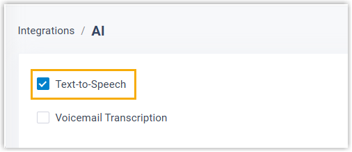

Enable AI Text-to-Speech
To use the Text-to-Speech (TTS) feature, you need to enable it first. This topic describes how to enable AI Text-to-Speech.
Requirements
- Firmware: 83.19.0.x or later
- Subscription: Enterprise Plan or Ultimate Plan
Procedure
- Log in to PBX web portal, go to .
- Select the checkbox of Text-to-Speech.

- Click Save.
Result
The AI Text-to-Speech feature is enabled.